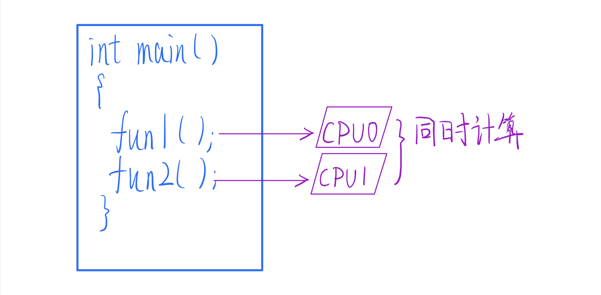
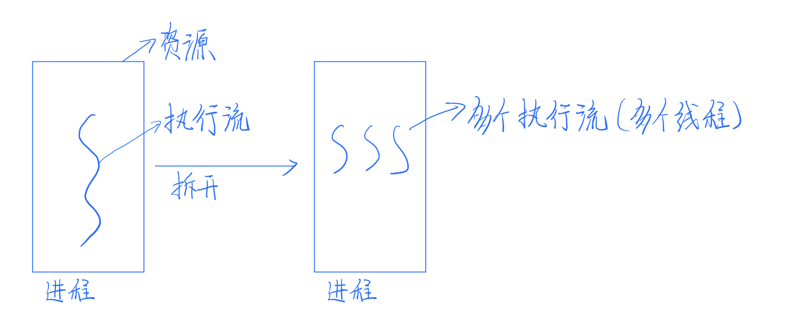
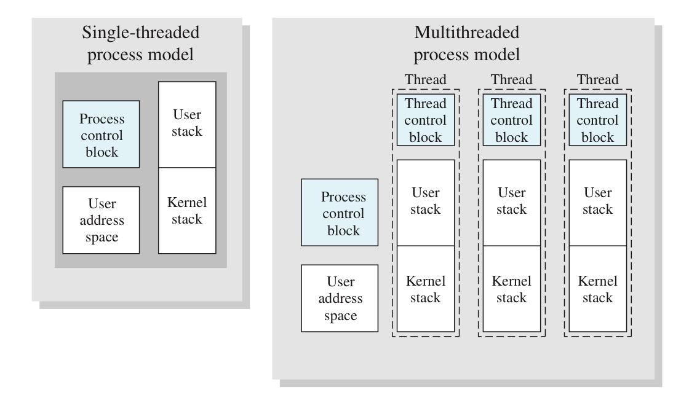
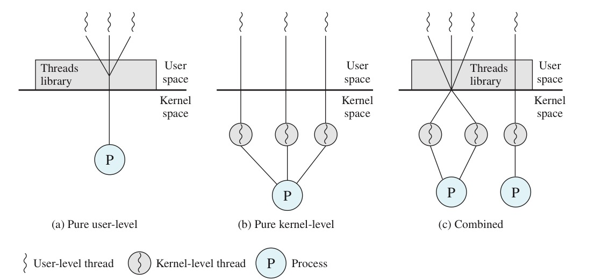

进程最近有些烦恼，整日愁眉苦脸的，拜访内存的时候也有点心不在焉。
内存是个明眼人，开门见山的问道：“进程啊，最近遇到啥问题了？我看你最近情绪有点低落，有啥问题你就直接说出来嘛，我让大家伙儿来一起帮你想想办法。”
进程叹了口气，说道：“唉，最近不是说 CPU 单核频率到瓶颈了吗？人类就用多核芯来弥补单核处理器性能的不足，咱们的 CPU 不也升级到四核了嘛。”
“是啊，这是好事啊，现在最多能并行处理 4 个进程，效率比以前高多了，这还不好吗？”内存疑惑的问。
“好是好，可我每次上 CPU 运行的时候，都忍不住去想，要是单核频率不增加，我总的运行的时间不还是没有什么变化吗？以后的应用程序越来越大，越来越吃 CPU 资源，比如那些大型游戏进程，在短时间内需要进行大量计算，靠单核撑不住怎么办。不谈以后，就说说我自己，我也想能够早点运行完，早点休息啊。”
tobe 注：很明显单进程的运行时间是变小了的，不过这里主要强调的是进程占用 CPU 的时间。
内存点点头，赞同道：“这个问题我倒是没想到，多核处理器对单个进程确实不大友好。那咱得想办法让你能够同时使用几个核心。不过我一时间也想不到什么好办法，还是和大家一起讨论下吧。”
在讨论会上，内存向大家说明了进程现在遇到的问题。
“一个进程怎么并行？”进程调度器第一个发出疑问：“我总不能把一个进程放在四个核上吧，这样不仅毫无意义，还阻碍了其他进程的执行。”
操作系统见多识广，说：“把进程一次放在几个核上运行肯定是不可能的，我在想，咱们的目标，其实就是让多个核心不冲突地帮助一个进程运行嘛。那我们就得把进程「拆开」，然后放在几个核上。”
操作系统一边说，一边画了张图：

“你们看，假如说 fun1 和 fun2 这两个函数互不关联，我们就可以让两个核同时执行他们，这不就做到并行了吗？”
“你的意思是说把一个进程拆成好几个进程？”
操作系统摇摇头：“不是拆成多个进程，进程切换的代价太大了，再说了，这些拆出来的函数，他们是共用一个地址空间的，天生就能够数据共享，如果拆成进程，我们还得再考虑进程之间的通信问题，那多麻烦。不过为了跟进程区分，就叫他们「线程（Thread）」吧”
进程一惊，要把自己拆成线程？那自己不就没了？赶忙问道：“那我岂不是没有存在的余地了？”
进程调度器也慌了：“要是没了进程，我是不是也要被退休了？”
操作系统赶忙解释道：你们误会了，我要拆开的，是进程的执行流，进程不是包含了资源所有权和执行流吗，资源所有权还是由进程来把控，执行流就分给几个线程，就像这样：

tobe 注：在进程模型里，进程拥有对内存、I/O 通道、I/O 设备和文件等资源的控制权，称之为「资源所有权」。「执行流」可以看做进程在 CPU 上的执行过程（直观一点就是高级语言里的语句）。
进程恍然大悟：“也就是说我仍然是资源的掌控者，那些线程就相当于帮我干活的小弟？”
“没错，而且从这种角度看，你本身还是一个单线程进程。”
听了这么久，内存发问了：“创建进程的时候，我要保存进程 PCB ，那为了创建线程，我是不是还得创建一个 TCB（Thread Control Block）？”
“当然了，线程切换需要的信息就得存在 TCB 里面。不过你放心，TCB 要比 PCB 小得多，所以线程切换会比进程切换快很多。”

大家听完，纷纷觉得「线程」这个模型完美的解决了当前的问题，说道：“要不我们现在就在操作系统里添上线程模型吧，早点解决进程的问题。”
但是操作系统面露难色，说：“线程模型只是我们的一个假想，贸然加进来的话，可能会出问题，系统崩溃可就不好了，还是要以稳定为主。。。但这个模型还是得试的，要不我们先创建一个线程库，靠一个用户级别的应用程序——线程调度器来管理这些线程吧。”
进程不解的问：“可是这样的话，我还是被分配在一个单独的核心上啊，即使是多线程，也只能在单核上运行。再说了，如果这些线程里有一个被阻塞，在你看来，是整个进程阻塞了，那其他线程，即使是就绪态，也得不到 CPU 资源。”
操作系统仔细想了下，说：“没办法，用户级线程确实有这两个缺点，但相比起让内核来实现线程，用户级线程也有他的好处——线程切换不需要我进行状态转换（从用户态到内核态），开销小，除此之外，线程库可以有多个调度算法，能够为应用程序量身定做调度算法。”
tobe 注：有一种解决线程阻塞的方案叫 jacketing，他可以把一个产生阻塞的系统调用转化成一个非阻塞的系统调用，比如说，不直接调用系统级的 I/O 例程，而是让线程调用应用级的 I/O jacket 例程，这个 jacket 例程会检查 I/O 设备是否忙，如果忙的话，就不执行 I/O 操作，转而调度其他线程，避免了因等待 I/O 设备而造成的进程阻塞。
用户级线程很快投入使用，Linux系统中的 pthread（POSIX thread）库可以说是大获成功，操作系统做出了一项重大决定——支持内核级线程。
内核级线程解决了进程并行的问题，除此之外，由于内核看得到线程的存在，一个线程阻塞了，位于同一个进程中的其它线程仍然能够运行。

并行的问题解决了，进程表示自己十分开心。
希望你在看完我的文章之后有所收获。
感谢你的阅读，我们后会有期！
声明：原创文章，未经授权，禁止转载